SuperPlatformerDX
About:
In the second term of my first year at Creative Media & Game Technologies, I created a game called SuperPlatformerDX for the Game Design module.
This is a long-awaited sequel to my first original game: ForestFoxDX.
In this alternate timeline, our courageous fox has learned how to create and use portals in his 2D world.
Once again, he must master his skills and overcome several challenges to may marry the princess.
Created by:

Engine:
Made in UnityPlatforms:
Windows, HTML5Game:
Screenshots:
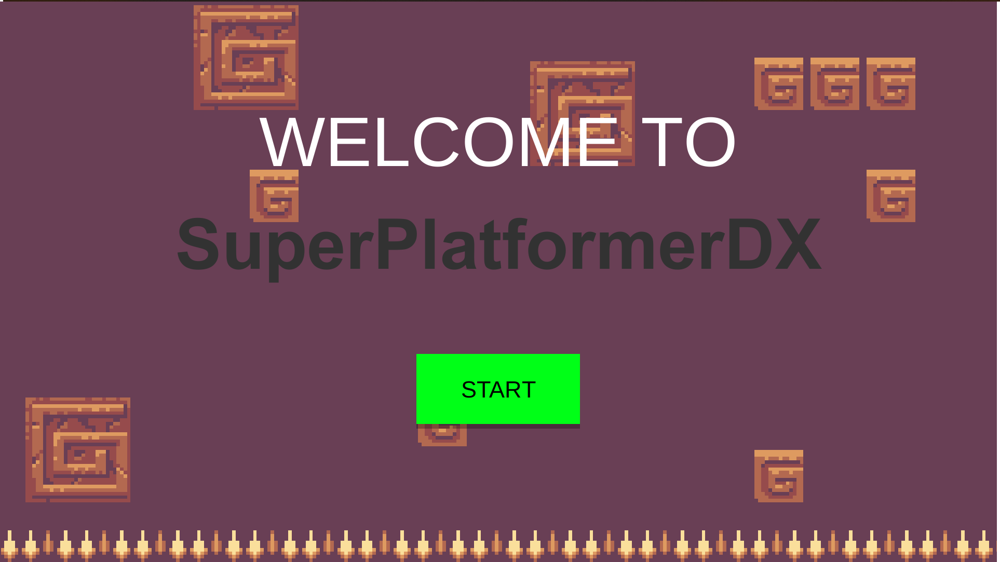
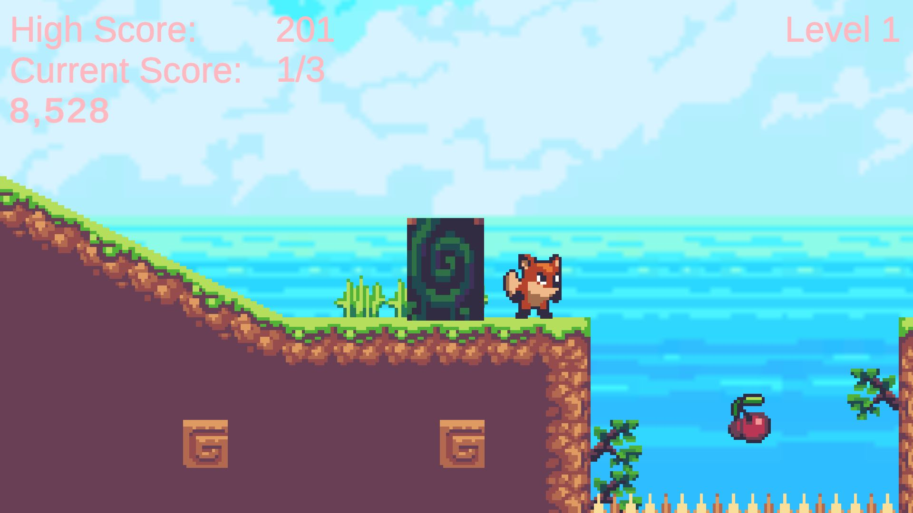
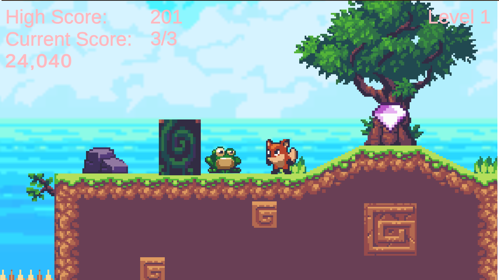
Process:
Game concept
SuperPlatformerDX is a 2D platformer with engaging mechanics and fun music about a fox who recently learned how to use portals! He must use these portals to reach new places and solve puzzles. If he solves these puzzles and platforming challenges, he may marry the princess of the forest.The fox is challenged by the animals of the forest; if he can complete the platforming challenges and learns to master his new abilities, he may marry the princess. Therefore, he goes on a noble journey to collect cherries and explore new areas. He needs to run, jump, set portals, and use these portals to achieve this goal. A Score, High Score, Timer, and the Level are visible in the UI. The Capture essence is used by obtaining terrain and collectibles. The Solution essence is used by solving the puzzles to get to new areas and collect collectibles.
My game is a 2D platformer, based on Super Mario Bros. and the Sonic the Hedgehog games. The fox is not able to jump very high, but high enough to reach new places. It is also a puzzle game, with a portal mechanic based on Portal and Portal 2, but in 2D. The player will need to master the movement and be able to react fast, but also needs to take his time to think of solutions for the portal puzzles.
Target Audience:
- Ages: 12 - 99
- Indie Game Fans
- Platformer Game Fans
- Puzzle Game Fans
- Achiever
- Explorer
WASD keys, as well as the arrow keys, can be used on PC. Controller support is added as well.
The game takes place in an upcoming blooming forest near the ocean. Floating islands occur, as well as dark caves. The fox lives in a beautiful house surrounded by bushes. The visuals are bright and colorful. The fox wants to complete the challenges so he can marry the princess of the forest. The frogs like to hinder and annoy the enemies of the forest. Therefore, they mimic their jumps, so they will not be able to pass. The eagles, however, are after their prey. They mimic the jump of their victims by flying in the way and have the strategy to move left and right in reverse. The closer their victim gets, the closer they will fly to it.
The game will feel happy and colorful. Fitting custom music is added to help convey this feeling. Bright colors are used, like Super Mario Bros. Wonder.
Flow is achieved by creating puzzles and obstacles that are interesting, feel good to overcome, and keep the player interested in moving on to the next one. Therefore, each challenge must feel new or unique, and there needs to be an overall (slowly) increasing difficulty. This way, the player is immersed because he learns to use the mechanics while also having fun playing the game and becoming better at it. Cherries are incorporated into the puzzle, so the moment the puzzle is solved, the player gets a reward.
Game Design Construct
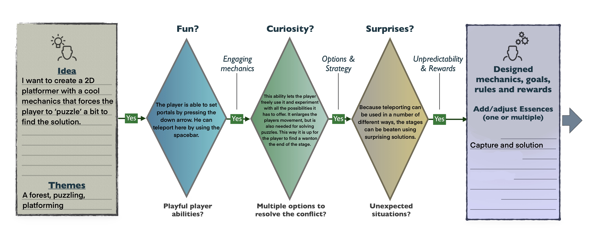
Gameplay
The main mechanic of the game is the portal. The player can create portals with the down arrow or S key and teleport with the spacebar. The goal is to find all cherries and The Lost Gems. The frogs mimic the player's jumps, so he will not be able to pass. The eagles mimic the jump of the player as well as mimicking the movement from left to right in reverse. Touching these enemies and touching spikes results in dying and starting the level over. Trapdoors close when the player has moved past them. This way, the player can only walk one way through, and from the other side, it acts as a solid wall.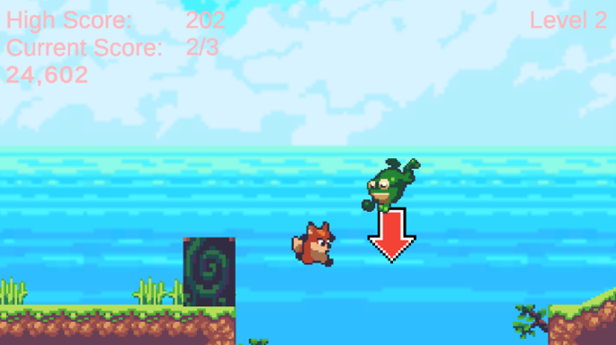
Here you can see the frog mimicking the player's jump and the portal.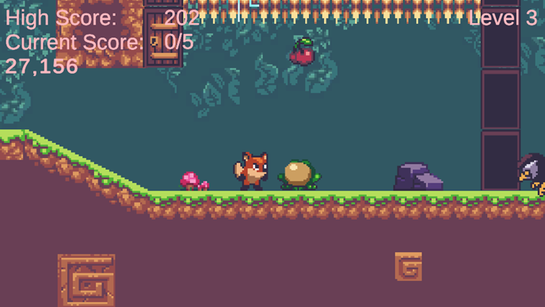
Here, the frog, spikes, eagle, cherry, and trapdoors are displayed. Closed trapdoors are on the top left, opened trapdoors are on the right.The player is constantly experiencing a goal–achievement–reward cycle. The player faces a new obstacle or puzzle; in the puzzle is the reward, a cherry. The player achieves the goal of solving the puzzle by collecting the cherry. The player is immediately rewarded when the puzzle is solved.
Flowchart
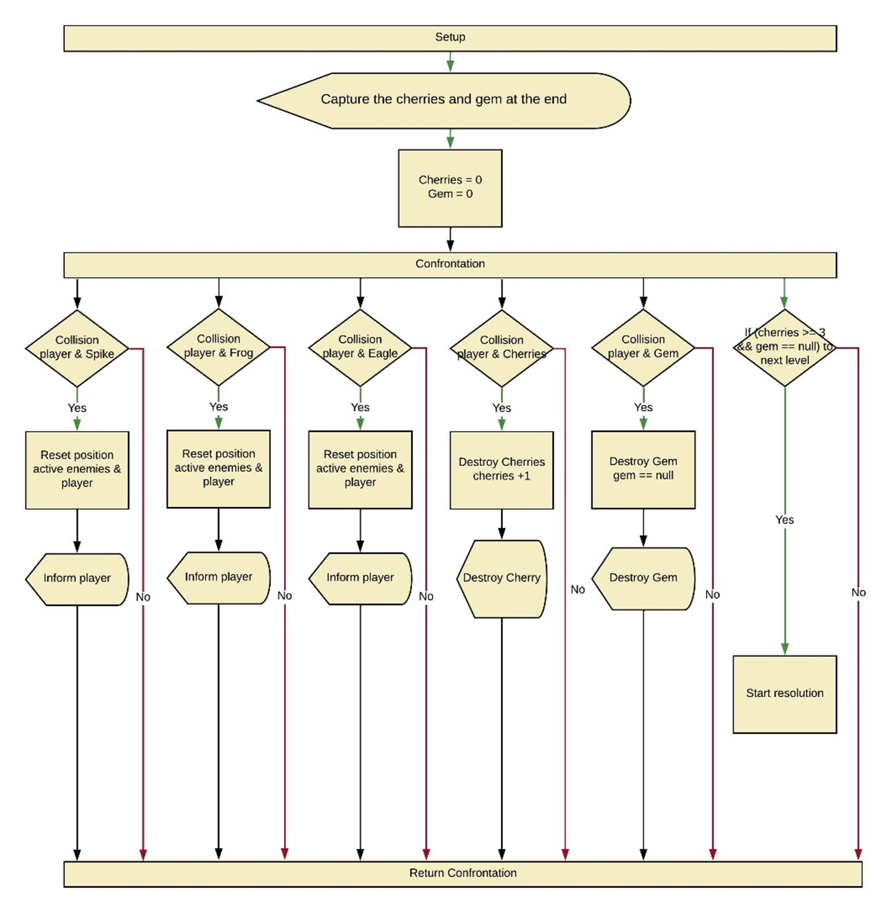
Introduction
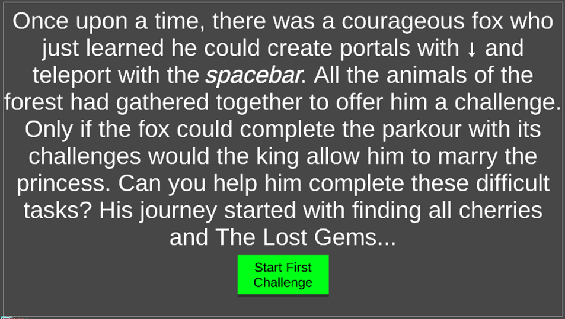
In this screen, the player learns that the fox is challenged by the animals of the forest; if he can complete the platforming challenges and learns to master his new abilities, he may marry the princess. Therefore, he goes on a noble journey to collect cherries and explore new areas. The movement is explained as well.
Level 1
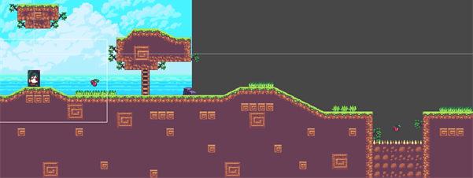
This is the first part of level 1. Here, the player learns to move the fox and to collect cherries. The first cherry indicates that the player has to move to the right. At the first pit, the player learns how to use the portal mechanic and the jump. The player needs to set a portal, walk into the pit to collect the cherry, and teleport back. After this, the player needs to jump over the pit to progress. Now the player has learned almost all the important information for level 1.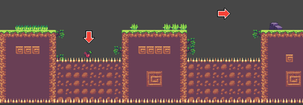
This is the second part of the 3-act structure of level 1. Here, the player has a harder cherry-collecting challenge. The arrow indicates that there is a cherry below (although it is still visible, but not so clear as the first one), and the arrow is foreshadowing the placement of a cherry in the second part of level 2. The player needs to master the teleporting ability to collect the cherry and progress. Afterwards, a couple more jumps to go to the final part of the level.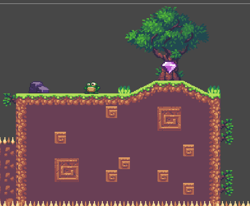
This is the last part of the level. Here player faces his first enemy and the last challenge of level 1. Once the player has gone past the frog, he can collect the gem. The gem, as well as the tree decoration indicate that this is the end of the level. As told in the introduction, if all cherries and the gem are collected, the player will move on to level 2.Level 2
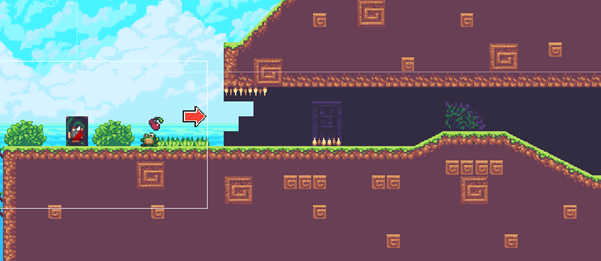
This is the first part of level 2. The player is greeted by a frog, and this immediately forms the first challenge. The player is introduced to the concept of a puzzle: collect the cherry, while not dying to the frog. The player needs to use the teleport mechanic in a smart way to progress. The arrow indicates that the player needs to move inside the cave (this fits with the explorer player type). The player is not able to go over it, but the arrow makes it clearer because some players found it confusing. I have changed the fires to spikes in the game, to make it clearer that it is dangerous. The spikes indicate that there will be more of them later in the level, and the player now has the most important information about how to beat the level.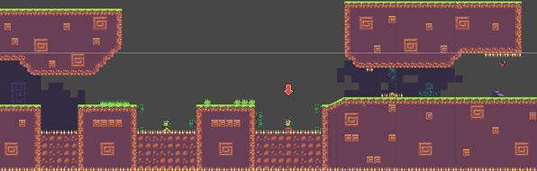
This is the second part of the 3-act structure of level 2. Here, the player starts with a tight jump over a pit at the end of the cave. The player can set a save state by placing a portal. In case the player falls, he can teleport back up. Then a jump over the frog in the pit follows. In the next pit is a cherry behind a frog. This is normally visible, but even clearer when the player jumps, and thus the frog too, revealing the cherry. The arrow also indicates the placement of the cherry. Afterwards, the player enters another smaller cave, with a tighter jump over some spikes than in the first part of the level. At the end of the cave, the player has one more puzzle to solve: collecting the cherry without dying from the spikes. The player needs to set a portal on the ground, jump, and teleport before he touches the spikes. The momentum will carry through the portal, and the player ends up collecting the cherry with seemingly two smaller jumps instead of one big full jump.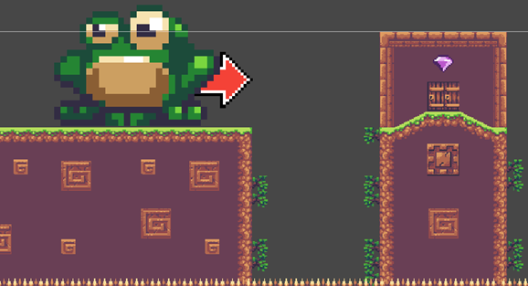
This is the last part of the level. Here player faces his last challenge of level 2: a giant frog that is guarding the gem. Once the player has gone past the frog and jumped over the final pit, he can collect the gem. The gem, as well as the fortress decoration indicate that this is the end of the level. As told in the introduction, if all cherries and the gem are collected, the player will move onto the final level.Level 3
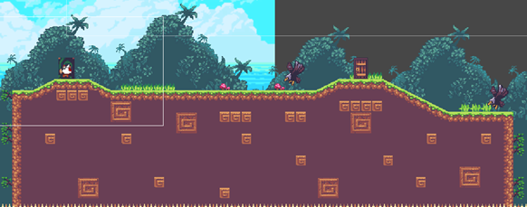
This is the first part of level 3. The player is greeted by their first eagle and needs to figure out its movement pattern. The player needs to use the teleport mechanic in a smart way to progress. Afterwards, the player is greeted by a trapdoor that closes behind him, making him unable to pass from the other side. This is also indicated by the second eagle not being able to pass through the trapdoor when walking against it. The player now has the most important information about how to beat the level.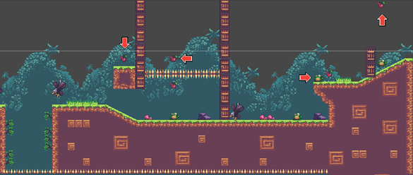
The second part of the 3-act structure of level 2 starts off with a pit and an eagle. The player needs to lure the eagle into the pit by using his movement. Afterward, the player needs to jump over the pit. The player needs to head up, as indicated by the cherry and the arrow (this fits with the explorer player type). Here, a trapdoor puzzle awaits him. The arrow also indicates that the player needs to push the down arrow, thus setting a portal. The player needs to set a portal, jump to the cherry, and teleport back because the trapdoors close behind him, and he is not able to jump over the spikes. Now the player needs to head back and go down. Here, a puzzle with a frog and a cherry is awaiting him. To solve this, the player needs to set a portal on the ground, jump, and teleport before he touches the spikes. The momentum will carry through the portal, and the player ends up collecting the cherry with seemingly two smaller jumps instead of one big full jump. Here, at the top of his second small ‘jump’, he needs to set another portal. Now there is a portal just below the spikes, next to the cherry. The player can now teleport through the portal and hold to the right to fall over the frog and collect the cherry in the process. For the next part, the player needs to set a portal before the trapdoors and move to the left, to let the eagle on the right fly to the right. The player still needs to avoid the frog on the left. The player can now teleport back to the trapdoors and move to the right while avoiding the eagle. The frog on the ground on the right can either be avoided by the player, or the player can smartly use the eagle to push the frog into the hole on the right. The player can now jump up while avoiding the frog on top of the platform. Here, the player collects a cherry for his hard work. A last puzzle awaits, where the player needs to pass through the trapdoors, avoid the frog, and collect the cherry. The player needs to make use of jumping, the movement pattern of the frog, the trapdoors, and the teleporting mechanic to collect this final cherry. Now he can move on to the final part of the level.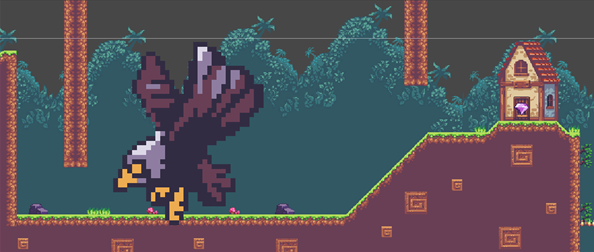
This is the last part of the final level. The player falls down, and here he faces his last challenge of the level: a giant eagle that is guarding the gem! Once the player has gone past the eagle, he can climb the mountain and collect the final gem. The fox is finally back home! The gem, as well as the house decoration indicate that this is the end of the level. As told in the introduction, if all the cherries and the gem are collected, the player will finish the level. This is the end of the game.You win!
 Now the player is greeted by a screen, giving him the option to play again, quit again, or go straight to level 2 or 3.
Now the player is greeted by a screen, giving him the option to play again, quit again, or go straight to level 2 or 3.
Please keep in mind that these were my (favorite) solutions to these puzzles; more solutions and combinations are possible with the given mechanics. All levels are fit for the achiever player type: the player will need to solve puzzles and jump over platforms to progress.
For the sprites, I have used the Sunny Land Asset pack by Ansimuz. For the arrow, I have used an arrow sprite by Antonella Falabella. I have created all assets except for the sprites myself. These include the game objects, scripts, scenes, animations, animators, etc. I have also created my own sounds and music for this game. I tried to create a soundtrack that is fitting for the style and vibe of the game and will not become annoying too fast.
Basic affordances are utilized in the presented level structure. Push & Pull, and affordances are used to guide the player to a great extent. There is a clear distinction between "good" objects/areas and "bad" (lethal) objects/areas. Objects/areas are obvious by their visuals and/or behavior from a distance and enable planning. Conceptual level design shows the layout and explains encounters in the presented portion of the game well. The levels are completely clear and contain nice puzzles designed around the mechanics.
The challenges provided at each stage seem appropriate for the player's level of mastery. Some moments of relaxation and build-up of tension are present. Types of challenges increase in quality (type vs. learned skills) rather than quantity (amount of challenges vs lack of player's skill). I have utilized pacing in the game by employing established narrative structures such as the 3-act-structure, build-up of tension and relaxation, learning mechanics in safe environments, and increase of difficulty.
The core mechanics are engaging without external influences. The mechanics feel appropriate for the way the game environment is set up. Players can see a clear connection between their abilities, progression, and how to strategize with the skills they gained. The game offers more than one playful ability that lets the player traverse through the levels in an engaging way. At least one player type is accounted for in a way that enables their preferences.
There is room to experiment with the abilities learned, either by combining them or playing with objects in a multitude of ways, etc. At least two player types are accounted for, and their own way of interacting with the game in a meaningful way.
Feedback:
The levels are completely clear and contain nice puzzles designed around the mechanics. Level design is explained in the GDD. Looking at the video, it seems some puzzle sections have unintended secondary solutions (did I just cheese them?).The buildup in challenges is excellent. However, there clearly needs to be more checkpoints! Sometimes one needs to explore or experiment (can I make this jump? What's below?) towards the end of the level, but one failure forces the player to replay all the previous challenges in the level, which gets old quickly.
The mechanics are very cool and original (reminding me a little bit of Braid and Portal): the fact that you keep your momentum while going through portals, and that portals can be placed everywhere, creates interesting puzzles. The two enemy types that mirror the player's movement combine very well with this mechanic to create different types of interesting puzzles. The levels can be broken a bit by placing portals arbitrarily high (just keep doing jump, warp, place). Maybe add fall damage or a ceiling to prevent this cheesy strategy. Small UX criticism: don't add a respawn button that needs to be clicked by mouse while the whole game uses keyboard.
During this project, I developed my skills in Game Design, Level Design, Unity, C#, Prototyping and Gathering and Applying Feedback.
Link:
Download it for free on my Itch page!
Look at this page on your laptop/pc to play or download the Windows version for free on my Itch page!